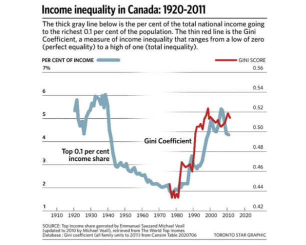
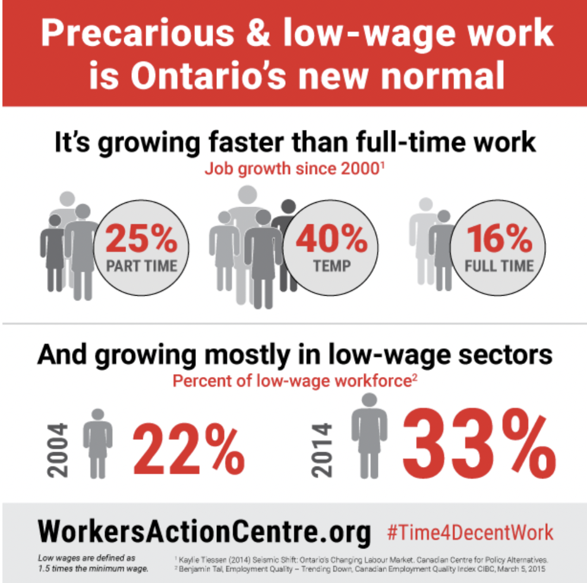

Why are the rich getting richer?
The Canadian Centre for Policy Alternatives is an independent, non-partisan research institute concerned with social, economic, and environmental justice issues. Founded in 1980, the CCPA is one of Canada’s leading progressive voices in public policy debates.

Read this article:
|
Growth of Inequality in Canada cannot be denied. In a famous 2011 article in Vanity Fair, Joseph Stiglitz, the Nobel Prize-winning economist, first warned that our economic policies were increasingly dominated by the richest 1 per cent. Then the Occupy Wall Street movement electrified the concept with political urgency.  Now Statistics Canada has turned its attention to the problem, too. The agency’s National Household Survey has documented the stark differences in personal income between the richest 1 per cent and the rest of us. The data are less precise than would have been attained from the former long-form census (which was cancelled by the data-phobic Conservative government). But despite its flaws, the report confirms that the gap between rich and poor in Canada has become enormous. Incomes for the bottom 90 per cent of Canadians averaged just $28,000, according to the report. In contrast, the top 10 per cent took home an average of $135,000. And the top 1 percent pocketed $381,000. Despite data like these, some still argue that income inequality in Canada isn’t an issue because it isn’t increasing. Others admit that the level of inequality is high, but we should graciously accept it because it encourages people to pull themselves up by their bootstraps. Neither argument carries much weight. The accompanying figure starkly describes the historical trend. The thick gray line indicates the share of national income going to the richest 0.1 per cent of the population (the richest of the rich, if you like). The thin red line shows the Gini coefficient: a broader measure of income inequality, which ranges from a low of zero (perfect equality) to a high of one (total inequality). By either measure, income inequality has reached a historic extreme. Inequality was high during the 1920s and 1930s (the “gilded age”), but fell sharply during the Second World War (as Canadians got back to work and taxes were raised to pay for the war effort). The three decades after the Second World War — a “golden age” of controlled capitalism — saw a further decline in inequality. The economy was booming and powerful institutions (like progressive taxation and surging unionization) ensured the wealth was broadly shared. Since 1980, however, we’ve entered another “gilded age.” Business-friendly economic and social policies replaced the former Keynesian welfare regime. In recent years, inequality has reached levels higher than at any time since the 1930s. And it is clearly staying that way, regardless of small year-to-year fluctuations. Does income inequality matter? There’s a growing consensus among scientists from many disciplines that it does: in complex, surprising, and economically important ways. Numerous studies document a powerful relationship between income inequality and varied dimensions of social pathology. |
|
Indicators as diverse as happiness, mental illness, infant mortality, children’s educational performance, teenage pregnancy, homicide, imprisonment, social trust, and social mobility all get worse as the income gaps within society deepen. The reigning economic orthodoxy assumes the distribution of income reflects “market forces” and “productivity,” but history confirms distribution is actually shaped by the power institutions of society. In Canada, three core institutions have been especially important: corporate power ⅔ redistributes income upward, while labour unions and governments redistribute income downward. Previous research by one of us revealed the historical relationship between corporate power and the distribution of personal income. It turns out that the relative size of the largest firms in Canada strongly affects the distribution of personal income: the inexorable corporate concentration in recent decades has clearly produced greater inequality. This study, “A Shrinking Universe,” also documented the downward redistribution of income resulting from organized labour. Union density grew steadily from 16 percent in 1940 to 37 percent by 1975 but has declined steadily since then. As union density increased, income inequality decreased — and vice versa during the new gilded age. Governments are also downwardly redistributive. The most obvious effect is through the tax and transfer system (although the progressivity of Canada’s tax system has diminished). Government spending also redistributes income downward. This is partly because public sector pay scales are more compressed than the private sector — with a higher floor and a lower ceiling. As public sector activities form a larger proportion of GDP, inequality moderates. The retrenchment of the Canadian public sector since 1992 has thus contributed to upward redistribution. All of this suggests some obvious conclusions regarding how to reduce inequality: strengthen the voice of organized labour and amplify the redistributive aspects of the Canadian state. Our own history proves there is nothing “natural” or “inevitable” about the level and trend of inequality. The present lopsided balance of institutional power in our economy and society (with big business increasingly calling the shots) and the resulting skewed distribution of income reflect past political and economic decisions. We need not replicate those decisions in the future. Jordan Brennan and Jim Stanford are economists with Unifor, the new union founded on Labour Day weekend through the merger of the CAW and the CEP.
|
Watch this video: Chrystia Freeland: The rise of the new global super-rich
Chrystia Freeland was a journalist and author of Plutocrats: The Rise of the New Global Super-Rich and the Fall of Everyone Else (2012), and then became a Liberal MP in 2015 and Minister of Foreign Affairs. In 2019, Ms. Freeland became the Minister of Intergovernmental Affairs and currently serves as the Deputy Prime Minister of Canada.
Plutocracy - Government by the wealthy.
A country or society governed by the wealthy.
An elite or ruling class of people whose power derives from their wealth.
Read this article:
|
Infographic: Precarious & Low-wage Employment Vineeth Sekharan York University; Canadian Observatory on Homelessness/Homeless Hub November 11, 2015 Categories: Infographic Wednesday
There has been a dramatic increase in recent years in precarious work in the Canadian job market. Precarious work is commonly defined as unprotected, non-standard employment that pays poorly, and makes it difficult to support a household. This week’s infographic, published by the Workers' Action Centre, takes a look at the growth of precarious and low-wage work in Ontario in recent years.
The infographic states that precarious and low-wage work has become Ontario’s new normal. According to a CCPA report on Ontario’s changing labor market, part-time jobs have shown 25% job growth since 2010 and temporary jobs have shown 40% job growth. Temporary employment, by its very nature, often results in incomes that are unpredictable, making households more prone to suffering from fluctuations in income. Furthermore, precarious work is growing mostly in low-wage sectors: the percentage of the low-wage workforce has increased by 11% in the last ten years. A common stereotype that is held by Canadians is the belief that many individuals live in poverty and homelessness because they choose to be unemployed. The reality is that high-quality, full-time jobs are becoming increasingly scarce, and precarious work often fails to even put families over the poverty line. In fact, according to a recent Citizens for Public Justice Report, 44% of poor households in Canada had at least one person working in 2011: a job on its own does not guarantee freedom from poverty. |
|
Addressing Precarious Employment
This increase in precarious work has commonly been attributed to the restructuring of employment relationships that prioritize productivity over the health and well-being of workers. However, by enacting policies that emphasize the rights of workers and the need for livable wages, governments can be active participants in supporting the economic health and well-being of their citizens. For this reason, provincial governments across Canada are being asked to increase their minimum wages, so that they become living wages. The term living wages is used to refer to wages that are high enough to maintain a normal standard of living. As more temporary and part-time employment continues to replace full-time positions, the role of collective representation, including labor unions, could play a part in the movement toward change. Compared to non-union members, union members are more likely to receive benefits, wage increases, and opportunities to voice their concerns to management. Unions also help 1/3 bridge the income divide that exists along the lines of gender and race in non-unionized workplaces. An important thing to consider is that women and racialized individuals are more likely to live in poverty. Canadian women in unionized workplaces earned, on average, $6.89 more than non-union women in 2013. The earning gap between racialized workers and white workers decreases from an estimated 30% in non-unionized workplaces to 8% in unionized workplaces. Unions achieve these outcomes partially due to collective bargaining. Collective bargaining helps to level the playing field between employees and employers and provides members with representation in the decision-making process. The continued dissemination and knowledge mobilization of research surrounding existing Employment precarity can pave the way for public support for changes in policy and practice. Advocacy and growing public support for the adoption of strategies that address precarious Employment is a step toward change. |
